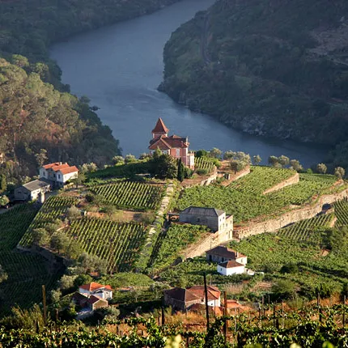
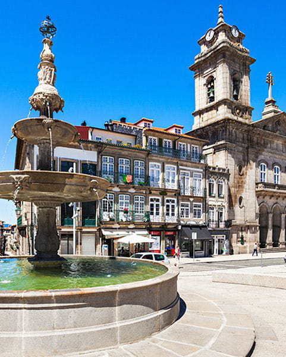
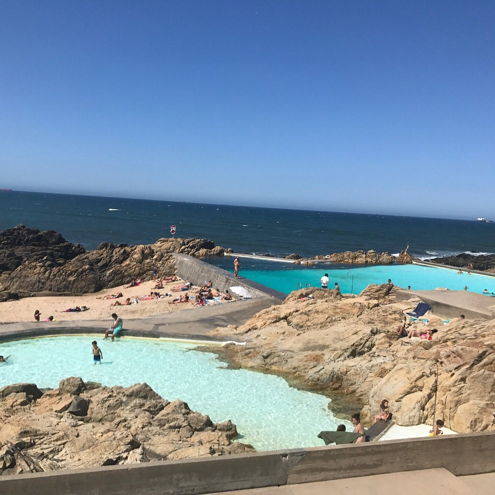

Douro Valley & Porto Day Trips
Escape the city and venture into the terraced vineyards of the Douro Valley, coastal surf spots, and historic Northern towns.

UNESCO Wine RegionDouro Valley & Pinhão
World’s oldest demarcated wine region featuring breathtaking terraced vineyards along the river, scenic train rides, and rustic wine quintas.
- Douro Valley (Train from São Bento to Pinhão)
- ~€11 train return | Quinta tours €15 – €30

Medieval HistoryHistoric Guimarães
UNESCO-listed medieval city known as the birthplace of Portugal, featuring a grand 10th-century castle, Palace of the Dukes, and historic plazas.
- Guimarães (1-hour urban train from São Bento)
- ~€7 return train | Castle entry €3 – €6

Beach & SurfMatosinhos Beach
Porto's main ocean beach popular for surfing, sunbathing, and fresh outdoor seafood restaurants serving grilled sardines along the coast.
- Matosinhos (Metro Line A to Matosinhos Sul)
- Metro ~€2 | Free beach access
Erasmus Local Tip
Take the direct regional train from **São Bento Station to Pinhão** in the Douro Valley! The train ride itself follows the riverbank and offers incredible views. If you have a monthly **Andante Metro Pass**, check if your zones cover **Matosinhos Sul** for free subway trips directly to the beach!